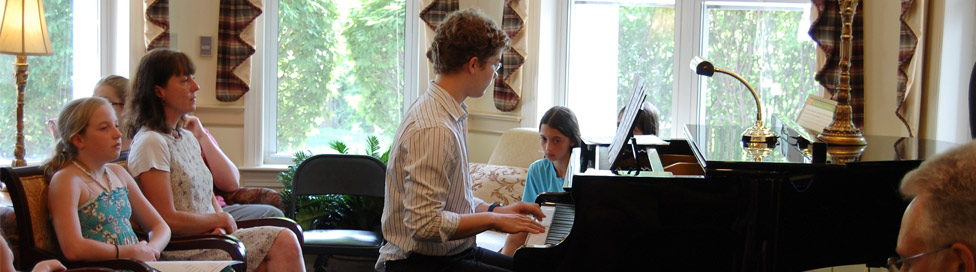

Frequently Asked Questions
If you are interested in taking piano lessons with Judit for or your child, below are some of the most commonly asked questions. Look for this list to grow over time.
We don't have a piano at home only a keyboard. Is that sufficient to start piano lessons?
While keyboards / electronic pianos are sufficient to start lessons, the touch and tone of an acoustic piano is usually far more superior to that of a digital/electronic instrument.
My child is only in kindergarten. Is s/he too young to start piano lessons?
Lessons are catered to the individual needs and abilities of the students. Lessons with a 5 year-old student would include more rhythm and listening games. In general, the younger the student the slower progress is expected to take place. It is recommended that a parent of a young student sit in on the lesson and is available to also sit with the student while practicing at home.
How much time should my child spend practicing?
Practice times vary with age and also change as the repertoire becomes more challenging. In general, a minimum of 15-20 minutes should be spent on practicing at least 5 days a week at the beginning level.